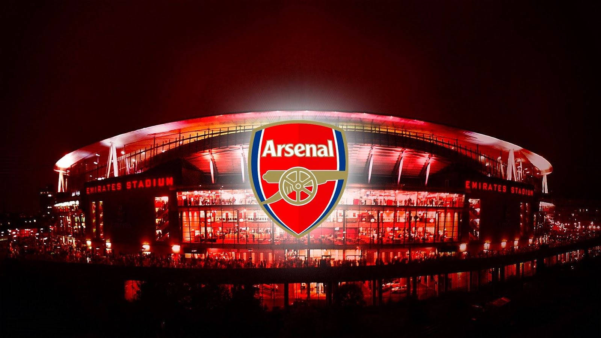

Arsenal FC - fanklub The Gunners!
📜 Dědictví a Historie
Klub byl založen v roce 1886 jako Dial Square dělníky z Royal Arsenal v Woolwichi. Od té doby se Arsenal stal jedním z nejúspěšnějších a nejznámějších klubů v anglickém fotbale, známý pro svůj elegantní styl hry pod vedením legend jako Herbert Chapman a Arsène Wenger.
Arsenal je jediný anglický tým, který vyhrál ligovou sezónu bez jediné porážky (sezóna 2003/04 – "The Invincibles").
🏟️ Emirates Stadium
Od roku 2006 je domovem Arsenalu moderní Emirates Stadium, který nahradil historický Highbury. Stadion má kapacitu přes 60 000 diváků a je architektonickou dominantou severního Londýna.

Adresa: Hornsey Rd, London N7 7AJ, Spojené království.
⭐️ Současné Hvězdy Týmu
Arsenal disponuje mladým a talentovaným kádrem, který pod vedením Mikela Artety bojuje o nejvyšší příčky.
- Bukayo Saka #7 - Klíčový útočník a symbol akademie.
- Martin Ødegaard #8 - Kapitán a tvůrce hry.
- William Saliba #2 - Pevný pilíř obrany.
- Declan Rice #41 - Neúnavný motor zálohy.